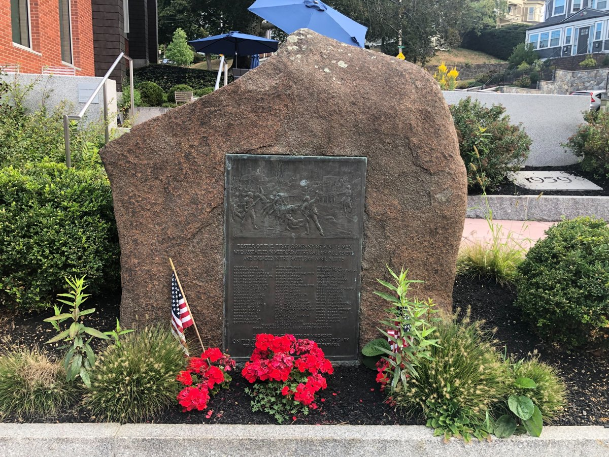

Biography
Peter Tufts Jr. was born in 1753, the son of Peter and Anne (Adams) Tufts of Winter Hill. On April 19, 1775, the day his parents marked their twenty-fifth wedding anniversary, he marched from Medford with Capt. Isaac Hall's company on the Lexington alarm. Medford later listed his name on its monument to the town's First Company of Minute Men.
Service Record
Town: Medford · Dates: 1753 – 1832 (1836 per Wild; see conflict)
“TUFTS, PETER, Jr., Medford. Private, Capt. Isaac Hall's co., Col. Thomas Gardner's regt., which assembled April 19, 1775; service, 5 days; also, account of money paid by persons to hire men to go to Canada [year not given], examined [p. 137] and allowed by a committee at Medford Oct. 8, 1776; also, account of money paid by persons to hire men who went to New York in Sept., 1776, examined and allowed by a committee at Medford Jan. 13, 1777. [p. 138]”
Massachusetts Soldiers and Sailors of the Revolutionary War, vol. XVI (1907), pp. 137–138 · page scan · page scan


“TUFTS, PETER, JR. Private, Lexington alarm; loaned money for bounty paid to men enlisting July and Sept., 1776; served guarding troops of convention, 1778.”
Helen Tilden Wild, Medford in the Revolution (1903), p. 52 · page scan

“TUFTS PETER JR.”
Roster of the First Company of Minute Men, monument erected by the City of Medford (1925) · page scan

Family Connection
“Son of Peter and Anne (Adams) of Winter Hill; born 1753; married Hannah Adams; died 1836.”
Helen Tilden Wild, Medford in the Revolution (1903), p. 52 · page scan
“PETER 38. Son of Peter 37; m. HANNAH ADAMS [19] July 22, 1773, at Camb., who d. 1816, æ. 60 (tablet with Bernard).”
Thomas Bellows Wyman, The Genealogies and Estates of Charlestown, vol. II (1879), p. 965 · page scan

“ii. Peter, Jan. 9, 1753.”
Thomas Bellows Wyman, The Genealogies and Estates of Charlestown, vol. II (1879), p. 965 (issue of Peter 37) · page scan
From Tufts Kinsmen
Vol. II, which covers generations 7 and 8, places Peter Tufts Jr. as Peter5 in the line “from Peter5, Peter4, Peter3, John2, Peter1.” It also records the families of four of his sons: Peter6 and Martha (Locke) Tufts, Joel6 and Sarah (Butterfield) Tufts, Thomas6 and Sarah (Barrows) Tufts, and Aaron6 and Mehitable (Pearson) Tufts. All are cross-referenced to Vol. I family 129 (children 129-2, 129-4, 129-6, 129-10). (Tufts Kinsmen, Vol. II, pp. 145, 149, 150, 151)
His grandson Peter7 is listed as “PETER7 TUFTS, 3rd, leather manufacturer,” born 3 Sep. 1798 in Charlestown. (Tufts Kinsmen, Vol. II, p. 145)
Identity match: strong. The line and his son Peter6’s marriage to Martha Locke agree with Wyman, p. 965. Vol. II does not give Peter5’s own birth or death dates; those are in Vol. I, which has not been seen.
Vol. I
Listed as Peter Jr., 3rd, family no. 53-2: born 9 Jan. 1753 in Woburn; died 4 Nov. 1832 in Charlestown; married Hannah Adams. (Tufts Kinsmen, Vol. I, p. 178, family no. 53-2; owner-supplied extract; page scan not on file)
Answered the Lexington Alarm and served in the militia at Dorchester Heights in defense of Boston, with other service during the Revolution (the book cites DAR records 14:145, 202–3 and 41–56). Head of household in Charlestown in 1820 and 1830. (Tufts Kinsmen, Vol. I, p. 178, family no. 53-2; owner-supplied extract; page scan not on file)
| Source | Says |
|---|---|
| Helen Tilden Wild, Medford in the Revolution (1903), p. 52 | “died 1836” |
| Tufts Kinsmen, Vol. I, p. 178 | died 4 Nov. 1832, Charlestown (agrees with the secondhand DAR A116812 listing) |
| Source | Says |
|---|---|
| Thomas Bellows Wyman, The Genealogies and Estates of Charlestown, vol. II (1879), p. 965 | “Peter, Jan. 9, 1753” (issue of Peter 37 of Charlestown; no place stated) |
| Tufts Kinsmen, Vol. I, p. 178 | born 9 Jan. 1753, Woburn |
Identity match: clean. Birth date, wife (Hannah Adams), Lexington Alarm service, and the Charlestown/Medford setting agree with Wyman, Wild, and MSS.
⚑ Unverified
Death year: Wild (p. 52) prints 1836; Tufts Kinsmen Vol. I (p. 178) and the secondhand DAR A116812 listing give 1832. Both are shown above. Birthplace: Vol. I says Woburn; Wyman gives no place. A separate MSS entry, “TUFTS, PETER. Private, Capt. Benjamin Blaney's co. …” (p. 137), gives no town, so it is not attached to him. DAR records themselves have not been seen. The Tufts Kinsmen Vol. I statements on this page come from an extract supplied by the owner and have not yet been checked against a page scan (citation rule: page scan not on file).
Pictures

_-_DSC04318.JPG){kind=link}

_-_general_view.jpg){kind=link}

.jpg){kind=link}
Find a Grave
Find a Grave memorial 272011734. As given there (secondary; not checked against original records): Listed as “Peter Tufts III.” Born 9 Jan 1753, Woburn. Parents Peter (1728–1791) and Anne Adams; wife Hannah (Adams) Tufts (1756–1843, m. 1773); children Peter, Sally Tufts Locke, Aaron.
⚑ Unverified: Find a Grave conflict
Burial and death. The memorial gives death 4 Nov 1832, Charlestown, and burial in the Old Burying Ground, Cambridge; the SAR/DAR text on the same page gives 4 Nov 1833, Medford. Neither the Cambridge burial nor the 1833 date is verified. This page continues to show 1832 (Tufts Kinsmen Vol. I; DAR) and 1836 (Wild).


⚑ Unverified: birthplace conflict
Booth: “Peter, the eldest son of Peter and Anne (Adams) Tufts, was born in the old house on Winter hill in 1753.” (Edward C. Booth, “The Tufts Family in Somerville,” Historic Leaves vol. 1, p. 22. Perseus)
Tufts Kinsmen Vol. I: “born 9 Jan. 1753 in Woburn.” (Tufts Kinsmen, Vol. I, p. 178, family no. 53-2; owner-supplied extract; page scan not on file)
Neither is confirmed by a primary record. The data on this page is unchanged.
Maps by His Son
His son Peter (1774–1825), “Peter, the surveyor,” drew the 1818 Plan of Charlestown Peninsula (Booth, Historic Leaves vol. 1, p. 23). A 1794 plan of Medford signed “Peter Tufts junr” may be by either man. See Places: Maps and the Powder House, beside the farm he bought in 1788.
Further Research Links
Outside resources for further research. Secondary and user-contributed sites (blogs, family trees, memorial sites, Wikipedia) are not verified here.
- Helen Tilden Wild, Medford in the Revolution, printed p. 52 / Full PDF, printed p. 52 / Full PDF (printed p. 52 – Peter Tufts Jr. service details) (Internet Archive)
- Lexington Alarm (Wikipedia)
- Dorchester Heights (Wikipedia)
- All Tufts Revolutionary Soldiers (Lexington Alarm entry for Peter Tufts Jr.) (Tufts Genealogy blog) Secure (https) version listed separately.
- All Tufts Revolutionary Soldiers (Lexington Alarm entry for Peter Tufts Jr.) (Tufts Genealogy blog)
- Old Burying Ground, Lexington, Massachusetts (Revolutionary War Soldier or Patriot Grave Location per DAR markers file) (Find a Grave)
- Peter Tufts III (1753-1832) – verified Lexington Alarm and Capt. Isaac Hall’s Co. details (WikiTree)
- Medford Revolutionary War Monument (High Street, Medford – commemorates Capt. Isaac Hall’s Company including Peter Tufts Jr.) (monuments.freedomsway.org)
- Peter Tufts Jr. memorial (Find a Grave) This memorial is for his father, Peter Tufts of Winter Hill (1728–1791), not for Peter Jr.
- Anne Adams Tufts memorial (Find a Grave) Memorial of his mother, Anne Adams Tufts.
- Lexington Alarm (Wikipedia)
- Battle of Bunker Hill (Wikipedia)
- Winter Hill, Somerville (Tufts homestead site) (Wikipedia) link reported broken (checked 2026-11-03)